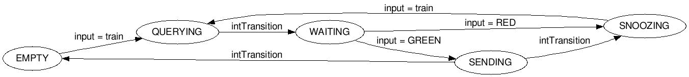
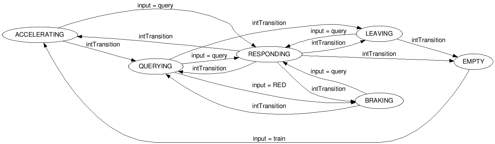
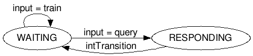

Assignment 6: DEVS
- Rafael De Smet - 20131145
- Benoît-Philippe Fornoville - 20133299
In this assignment we designed and implemented a simulation of a number of trains on a traintrack. The purpose of this assignment was to use the DEVS technology and to perform a performance analysis on the number of trains on different kinds of track configurations.
Code
Before we start the performance analysis, we will discuss the code and the design choices we made. All the code can be found in the src folder. To run the simulations, execute the following command: python system.py Make sure that the python executable you use is version 2.7.
Below you can find diagrams depicting the design and flow of the classes explained here.
Generator And Queue
In the file generator.py you can find the code used to generate the trains. In this file you find two classes, Generator and Queue. These two will be connected to each other before connecting with the other railway segments.
Generator
The Generator class generates the trains and sends them to the queue. This class has only one output port where the new train will be sent on. This class derives the AtomicDEVS class of the pythonPDEVS library. This means we have to implement the four methods timeAdvance, outputFnc, intTransition and extTransition. Below is a list explaining the implementations of these functions.
-
timeAdvance: The time advance of the generator is the newly generated random inter arrival time (IAT), because we want to keep track of when new trains are generated. The new IAT is a random number between in the specified range [IATMin, IATMax[.
-
outputFnc: The output of the generator is always the new train. A new train has a random maximum acceleration, generated from the specified range [aMin, aMAx[. Every train has a unique ID, so we can keep track of the trains during the simulation. To be able to perform the performance analysis, we need to know the creation time of each train. We ask the simulation what the current time is at the generation of the train.
The new train is then put on the output port, to be sent to the queue.
-
intTransition: The internal transition is very simple, since there is only one state, in this case we used a boolean True. The generator only has one job and therefore only one state, namely keep outputing trains.
-
extTransition: This method is not implemented here because there are no inputs possible in a generator.
Queue
The Queue class is a bit more complex than the Generator class. This class has two input ports (the new train from the Generator and the acknowledgement of the query) and two output ports (one for sending the query and one for sending a train). The Queue has five possible states to be in: EMPTY, QUERYING, WAITING, SENDING or SNOOZING. Lastly there is a list named q that holds the queued trains.
The Queue class also derives from the AtomicDEVS class so the same four functions are implemented. Below again you can find the list with explanations of these functions.

-
timeAdvance: There are several possible time values depending on the current state of the Queue.
-
EMPTY and WAITING: If the queue is empty or is waiting after sending a query, we return infinity, because we are waiting for input (a train or an acknowledgement).
-
SNOOZING: If the queue is snoozing, this means there are trains in the queue and the queue needs to know what the state of the following segment is. So we return 1 as the new time, because we want to send a query every second.
-
QUERYING and SENDING: If the queue gets a positive qAck from the first segment (green light), we want to immediately output a train (SENDING) or if we get a new train from the Generator we want to immediately output a new query (QUERYING).
If there is an unknown state we raise an exception and terminate the simulation.
-
outputFnc: In this function we decide whether to put data on the output ports or not. Beware that the output is based on the old state of the Queue and is produced before the transition is made (in intTransition). Again there are several cases.
-
QUERYING: If the state was querying we send out a new query, which will trigger a query acknowledgement to be sent in the next railway segment. This happens via the qSend port.
-
SENDING: If the state was sending, we pop the first train from the queue (FIFO) and set the departure time of this train to the current time. This happens via the trainOut port.
-
EMPTY, WAITING and SNOOZING: In the other cases there is no output.
If there is an unknown state we raise an exception and terminate the simulation.
-
intTransition: In this function we change the (internal) state of the queue. Again there are several cases.
-
QUERYING: If the current state was querying, we go to the WAITING state because we want to make sure nothing happens until we get the query acknowledgement.
-
SENDING: If the current state was sending, there are two possibilities. Either the queue is empty, in which case we go the EMPTY state. If there are trains in the queue, we go the SNOOZING state. This state allows us to distinguish the situtation where the queue has trains but is not allowed to pop and send the first train.
-
SNOOZING: If the current state was snoozing, we go to the QUERYING state because we want to know (by sending a query) if the first railway segment is empty . This depends on the query acknowledgement of the segment.
If there is an unknown state we raise an exception and terminate the simulation.
-
extTransition: This functions handles the inputs. There are two input ports, so two seperate situations to take care of.
-
If the input is a new train, we append it to the queue and change the state to QUERYING, because we need to know what to do next (this new train may be the only train in the queue at a given moment).
-
If the input is a query acknowledgement, we know the light of the next segment. If it is GREEN, we change the state to SENDING, because we know that it is allowed. If the light is RED, we set the state to SNOOZING until we get a green light.
If there is an unknown input we raise an exception and terminate the simulation.
Railway Segment
In the file railwaySegment.py you can find the code for the railway segment. A segment has several attributes: the length, the current train, the timeToLeave i.e. the time needed for the train to leave (stored as a pair of timeAdvance and currentTime), and the timeTo1000 i.e. the time needed for the train to see the light of the next segment (also stored as a pair of timeAdvance and currentTime). There are three input ports (one for receiving a new query of the previous segment, one for receiving a new train of the previous segment and one for receiving the query acknowledgement of the next segment). There are three output ports (one for sending the query acknowledgement to the previous segment, one for sending a new query to the next segment and one for sending the current train to the next segment).
A segment has six possible states: EMPTY, ACCELERATING, QUERYING, BRAKING, LEAVING or RESPONDING.
The RailwaySegment class also derives from the AtomicDEVS class so the same four functions are implemented. Below again you can find the list with explanations of these functions.

-
timeAdvance: There are several possible time values depending on the current state of the segment.
-
EMPTY and QUERYING: If the segment is in either of these states, we return infinity, because we are waiting for input.
-
ACCELERATING: If the segment is in this state, it means that the current train is accelerating till it can see the light of the next segment.
-
If the length of the segment is smaller than 1000 meters (which means we can already see the next light), we immediatly leave this state state, by returning 0.
-
If the length is larger than 1000 meters, then we need to look at the time it takes to get to 1000 meters before the segment ends.
We calculate when the train will reach the end (via the accelerate_formula) and return this as the new time advance.
If we already calculated this before (and were interrupted by a request), we use the value stored in timeTo1000.
-
BRAKING: If the segment is in this state, it means the current train is braking. The braking formula expects us to poll every tPoll second for the light (this means to send a new query). We chose to poll every second. This means that the timeAdvance is 1.
-
LEAVING: If the segment is in this state, it means the train is less than 1000m away from the end of the current segment and received a green light from the next.
Now it is important to note that we keep track of the timeToLeave for a train, similarly to the timeTo1000.
This is necessary because LEAVING can be interrupted by a request of the previous segment, to which we have to respond immediatly (RESPONDING).
Thus we have to set the timer correctly when we re-enter LEAVING.
-
RESPONDING: If the segment is in this state, it means that we are sending a query acknowledgement back to the previous segment. We want this to happen immediately, so a time advance of 0.
If there is an unknown state we raise an exception and terminate the simulation.
-
outputFnc: This function will output the correct data at the correct times. Note that just as with the Queue, the output is based on the old state and produced before we make the transition. Again there are several cases.
-
RESPONDING: We respond to the query received from the previous segment. Here there are two cases as well. If the segment was empty in the previous state, we output GREEN as acknowledgement. Otherwhise we know there is a train on the segment and output RED. In this case we need to perform some extra logic, in order to ensure that all the trains leave at the same time.
If the previous state of the segment was LEAVING (which means the train has seen the next light) we calculate a new timeToLeave based on the previous timeToLeave. Remember that the timeToLeave is a tuple of the time to advance and the time of the calculation of the previous timeToLeave. We update the latter to the current time. The new time advance is the old time advance minus the elapsed time since the last calculation.
Analogously, if the previous state was ACCELERATING (which means the train has not yet seen the next light), we do the same calculations for timeTo1000 instead of timeToLeave.
-
ACCELERATING and BRAKING: We send out a query to the next segment to know what action to take.
-
LEAVING: We know that the current train can leave the segment. We output this on the trainOut port.
-
intTransition: This function changes the state of the segment. There are several cases.
-
RESPONDING: When leavinght this state we need to return to the previous state.
-
ACCELERATING: We are maximum 1000m away from the exit, so we set timeTo1000 to None and return the QUERYING state. This is because we want to know what the light of the next segment is.
-
BRAKING: We go to the querying state to know if the train may leave.
-
LEAVING: We know the train can leave, so we set the timeToLeave to None and go to the EMPTY state.
If there is an unknown state we raise an exception and terminate the simulation.
-
extTransition: This function handles the three inputs of a segment.
-
If the input is new query, we store the state we are in and go to the RESPONDING state.
-
If the input is a new train, we set this as the current train and update the remaining distance. The new state is ACCELERATING.
-
If the input is a query acknowledgement and the light was GREEN, we set the state to LEAVING. If the state was RED, we set the state to BRAKING.
Collector
In the file collector.py you can find the code for the collector segment. The Collector class has two input ports (for receiving the query and one for receiving the train) and one output port (to send the query acknowledgement). There is a list keeping track of the collected trains. This class has two possible states, WAITING or RESPONDING.
The Collector class also derives from the AtomicDEVS class so the same four functions are implemented. Below again you can find the list with explanations of these functions.

-
timeAdvance: There are several possible time values depending on the current state of the Collector.
-
WAITING: We wait for input: a train or a query. So we return infinity.
-
RESPONDING: We respond immediatly, so we return 0.
If there is an unknown state we raise an exception and terminate the simulation.
-
outputFnc: There is only one possible output that the collector can send. Since it is a special case of a railway segment, it gives information about the light. A collector's light is always green, so it always ouputs GREEN via the qSack output port.
-
intTransition: After sending the acknowledgement, which happens in the RESPONDING state, the collector goes back in the waiting state. If there is an unknown state we raise an exception and terminate the simulation.
-
extTransition: This function gets the inputs. So there are two possible cases.
-
If the input is a new query, we go immediately in the RESPONDING state, so we can send the query acknowledgement back.
-
If the input is a new train, we set the arrival time, again based on the current time of the simulation. The new train is appended to list of collected trains and we go back in the WAITING state, until there is a new query received.
Train
In the file train.py you can find the code for a train. Each train has an unique ID, a maximum allowed acceleration, a maximum allowed velocity, a current speed, a variable to keep track of the remaining distance to travel on a segment. Besides this it has a creation time, a departure time and an arrival time, which are used in the performance analysis.
A train can accelerate and brake. For this we use the provided formulas in formulas.py.
-
Acceleration: the train will accelerate as fast as possible, based on its values (v, vMax, xRemaining, aMax). We need to distinguish between two situations. Either we know the train will be leaving the current segment, in which case we set the remaining distance to 0 (after calculating the best v and the time it will take to get there). Otherwise we know that the train will accelerate till he sees the next light (which is seen at a distance of 1000 meters) and we set the remaining distance to 1000 (again after calculating the best v and time).
The time is returned to the railway segment.
-
Braking: The situations where to brake are simpler than when to accelerate. Every time we know to brake, we brake till standstill. Note that we keep track of the distance of the track we still need to travel from where the train stops.
Besides these two functions, we have some getters for the time variables and we calculate the performance as the difference between the arrival time and the creation time.
System
In the file system.py you can find the code which executes all this explained above. This code will create a CoupledDEVS model with a combination of the previous classes all connected to each other. In the next section you will see which configurations we used and what the results are.
Performance Analysis
To analyse the performance we use several configurations of segments. We have a track with total length 5000. This track is divided in different number of segments. For every run we keep track of the trains received in the Collector. We collect the cost and performance of every run.
The performance is calculated as
$$\frac{\sum_{t = 1}^{number\_of\_trains}t_{performance}}{number\_of\_trains} $$
with $$t_{performance} = t_{arrival\_time} - t_{creation\_time}$$
The cost is calculated as $$ 10 * number\_of\_segments + performance $$.
The following tables show the values we used to run the analysis.
| Total Length |
Number Of Segments |
Length Of Segments |
| 5000 |
5 |
1000 |
| 5000 |
10 |
500 |
| 5000 |
15 |
333 |
| 5000 |
20 |
250 |
| 5000 |
25 |
200 |
| 5000 |
30 |
167 |
| Total Length |
Number Of Segments |
Length Of Segments |
| 10000 |
5 |
2000 |
| 10000 |
10 |
1000 |
| 10000 |
15 |
666 |
| 10000 |
20 |
500 |
| 10000 |
25 |
400 |
| 10000 |
30 |
333 |
| Total Length |
Number Of Segments |
Length Of Segments |
| 15000 |
5 |
3000 |
| 15000 |
10 |
1500 |
| 15000 |
15 |
1000 |
| 15000 |
20 |
750 |
| 15000 |
25 |
600 |
| 15000 |
30 |
500 |
| Total Length |
Number Of Segments |
Length Of Segments |
| 20000 |
5 |
4000 |
| 20000 |
10 |
2000 |
| 20000 |
15 |
1333 |
| 20000 |
20 |
1000 |
| 20000 |
25 |
800 |
| 20000 |
30 |
667 |
In the folder results you can find the results. There are four files, one for every total length. The results are also in the plots below. The left abr marked with C shows the cost per number of segments, the right bar shows the performance per number of segments.
Plot total length = 5000.

Plot total length = 10000.
Plot total length = 15000.
Plot total length = 20000.
Conclusion
We can conclude that for a total length of 5000 meter, using 5 segments of 1000 meter optimizes cost and performance.
For a total length of 10000 meter, using 5 segments of 2000 meter is best.
For a total length of 15000 meter, using 5 segments of 3000 meter is optimizes the cost but using 15 segments optimizes the performance, at a greater cost.
For a total length of 20000 meter, using 5 segments of 4000 meter is best for the cost but 20 segments optimizes the performance.<, at a greater cost